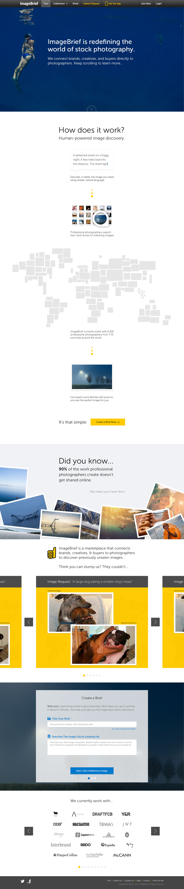
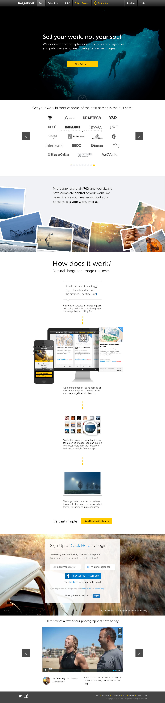
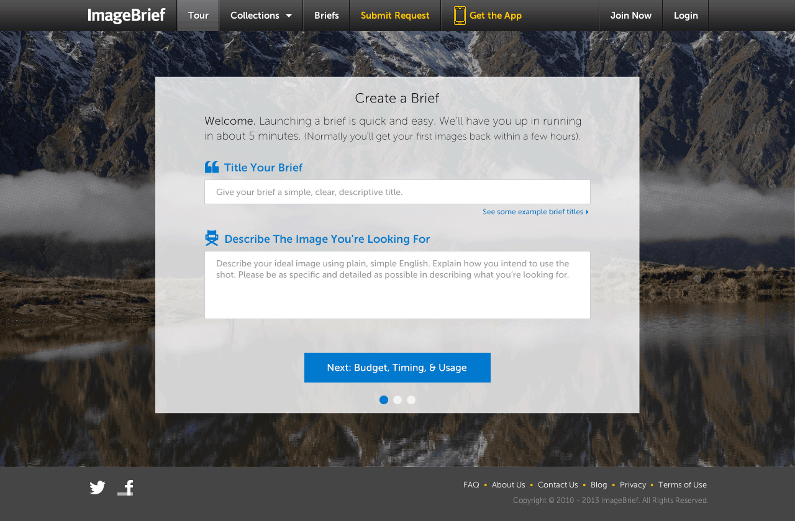

Check out ImageBrief: ImageBrief.com
TL;DR
I spent 3 months working with the ImageBrief team to redesign nearly every touch-point of their product/application. See screens below.
Initial Engagement
I was originally hired by the ImageBrief team for a 3-day engagement. I was tasked with completing a comprehensive analysis of their existing product in order to come up with opportunities for product enhancements, possibilities for new product development, and social marketing opportunities to grow the ImageBrief userbase of both photographers and art buyers.
Follow-Up Engagement
Based on the value of the ideas put forth during my initial engagement, I was subsequently contracted to spend the last 3 months of 2013 working in-house with the ImageBrief time. My time was spent assisting in the creation of an investment pitch and designing a number of the product enhancements. I was also tasked with advising the team on their social marketing strategy.
During this time, I worked my way through many of the various use-cases of the ImageBrief product, rethinking the UX and visual design for each.
A redesign of the ImageBrief homepage.
I designed a simple homepage that would funnel the appropriate target (image buyers and photographers) to a new page designed to speak specifically to their needs.
Audience-specific landing pages for image buyers and photographers.
These pages were designed to begin the onboarding process for each target type and to provide a target-specific landing page for ImageBrief marketing efforts.
The Image-Buyer Landing Page:
The Photographer Landing Page:
The brief creation process for art buyers:
For image buyers, the quality of photo submissions dictates the likelihood of a return customer. The relevance and quality of those photos rely on the buyer's ability to clearly communicate what they're looking for in an image.
With these issues in mind, I redesigned the brief submission process to both simplify it and to ensure that photographers received the right information to guide their submissions.
A new process to facilitate communication between buyers and photographers:
After conducting an Immersion Day — an in-person interview and focus group session — with ~20 ImageBrief photographers, it became clear that communication between buyers and photographers was a key issue. I redesigned the communication process (both the consumer-facing and administrative side) to provide an easier and more public means to request and receive feedback directly on a brief page.
An updated visual design for brief pages:
I also updated the visual layout of brief pages to more clearly communicate key information to photographers.
A redesigned photographer profile page:
The future vision for ImageBrief was the creation of a platform that allows not only for the discovery of images, but also the discovery and hiring of photographers. The Photographer Profile Page plays a key role in this process and serves as the home base for any photographer looking to get hired through ImageBrief.